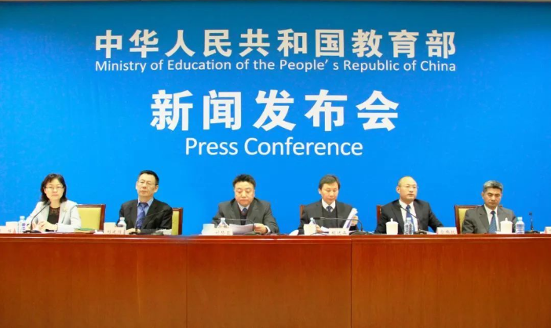

2月26日，教育部召开2019年第四场教育新春发布会，介绍2018年教育事业发展有关情况。教育部发展规划司司长刘昌亚介绍基本情况，基础教育司副司长俞伟跃、高等教育司副司长范海林、教育督导局巡视员胡延品、教师工作司巡视员刘建同分别介绍教育超大班额、高等教育内涵发展、薄弱学校改造工作、新时代乡村教师队伍建设等有关情况。
总体情况

根据2018年全国教育事业统计，2018年全国共有
幼儿园26.67万所，比上年增长4.6%。其中，普惠性幼儿园18.29万所，比上年增长11.14%，普惠性幼儿园占全国幼儿园地比重为68.57%。
入园儿童1863.91万人，比上年下降3.82%，在园幼儿4656.42万人，比上年增长1.22%。其中，普惠性幼儿园在园幼儿3402.23万人，比上年增长4.72%，占全国在园幼儿的比重为73.07%。
幼儿园专任教师258.14万人，比上年增长6.14%。其中，专任教师接受过学前教育专业的比例为70.94%。
2018年
全国共有义务教育阶段学校21.38万所，比上年下降2.33%。九年义务教育巩固率94.2%，比上年提高0.4个百分比。
小学阶段
全国共有普通小学16.18万所，比上年下降3.11%。全国普通小学招生1867.30万人，比上年增长5.70%；在校生10339.25万人，比上年增长2.43%。小学毕业生升学率99.1%，比上年提高0.3个百分比。
全国普通小学共有专任教师609.19万人，比上年增长2.47%；专任教师学历合格率99.97%；专任教师中本科及以上学历的比例59.12%。
全国普通小学（含教学点）共有校舍78619.53万平方米，比上年增加3531.07万平方米。全国普通小学设施设备配备达标的学校比例情况分别为：体育运动场（馆）面积88.47%，体育器械94.23%，音乐器材93.89%，美术器材93.70%，数学自然实验仪器93.72%。接入互联网的学校比例97.82%，拥有心理辅导室的学校比例61.48%，各项比例比上年均有提高。
全国普通小学共有班数275.39万个，比上年增加7.02万个。其中，大班额（56人及以上）17.87万个，比上年减少6.05万个，大班额占总班数的比例为6.49%，比上年下降2.42个百分点。
初中阶段
全国共有初中5.20万所，比上年增长0.17%。全国初中招生1602.59万人，比上年增长3.58%；在校生4652.59万人，比上年增长4.74%。初中毕业生升学率95.2%。
全国初中共有专任教师363.90万人，比上年增长2.54%；专任教师学历合格率99.86%；专任教师中本科及以上学历的比例为86.22%。
全国初中共有校舍64368.13万平方米，比上年增加3361.39万平方米。全国初中设施设备配备达标的学校比例情况分别为：体育运动场（馆）面积92.58%，体育器械95.91%，音乐器材95.45%，美术器材95.21%，理科实验仪器95.64%。接入互联网的学校比例98.96%，拥有心理辅导室的学校比例81.77%，各项比例比上年均有提高。
全国初中共有班数100.10万个，比上年增加5.28万个。其中，大班额（56人及以上）8.63万个，比上年减少4.72万个，大班额占总班数的比例为8.62%，比上年下降4.98个百分点。
高中阶段
全国高中共有学校2.44万所，比上年下降0.76%。全国高中阶段教育招生1352.12万人，比上年下降2.20%；在校生3931.24万人，比上年下降1.00%。
全国普通高中共有学校1.37万所，比上年增加182所；招生792.71万人，比上年下降0.92%；在校生2375.37万人，比上年增长0.03%
全国中等职业教育（含技工学校，技工学校数据由2017年数据替代）共有学校1.03万所，比上年减少331所；招生559.41万人，比上年下降3.95%；在校生1551.84万人，比上年下降2.55%。中等职业教育招生占高中阶段教育招生的比例为41.37%。
普通高中专任教师181.26万人，比上年增长2.18%.专任教师学历合格率98.41%，比上年提高0.26个百分比。中等职业教育专任教师83.43万人，比上年下降0.59%。专任教师中本科及以上学历的比例为92.10%，比上年提高0.52个百分点；“双师型”教师比例占30.65%，比上年提高0.66个百分点。
全国普通高中共有校舍54206.05万平方米，比上年增加2694.31万平方米。设施设备配备达标的学校比例情况分别为：体育运动场（馆）面积91.77%，体育器械93.84%，音乐器材92.71%，美术器材92.91%，理科实验仪器93.70%。接入互联网的学校比例98.78%，拥有心理辅导室的学校比例88.13%，各项比例比上年均有提高。
全国共有普通高校2663所（含独立学院265所），比上年增加32所。其中，本科院校1245所，比上年增加2所；高职（专科）院校1418所，比上年增加30所。另有研究生培养单位815个。各种形式的高等教育在学总规模3833万人。
全国普通本专科共招生790.99万人，比上年增长3.87%。其中，普通本科招生422.16万人，比上年增长2.78%；普通专科招生368.83万人，比上年增长5.16%。全国普通本专科共有在校生1697.33万人，比上年在增长3.47%。其中，在学博士生38.95万人，在学硕士生234.17万人。
全国共招收研究生85.80万人，比上年增长6.43%。其中，招收博士生9.55万人，硕士生76.25万人。在学研究生273.13万人，比上年增长3.47%。其中在学博士生38.95万人，在学硕士生234.17万人。
全国共招收成人本专科273.31万人，比上年增长2.42%；成人高等学校专任教师2.19万人，比上年下降8.68%。普通高等研究生以上学位教师比例为73.65%，比上年提高1.68个百分点。
普通高校校舍建筑面积86690.57万平方米，比上年增长1.77%。另有由学校独立使用的非学校产权建筑面积11022.99万平方米。普通高校生均占地面积58.66平方米；生均校舍建筑27.75平方米；生均教学科研仪器设备值为15714.28元。 全国共有特殊教育学校2152所，比上年增长2.1%。全国共招收各种形式的特殊教育学生12.35万人，比上年增长11.43%；在校生66.59万人，比上年增长15.05%.其中，附设特教班在校生3316人，占特殊教育在校生的比例为0.50%；随班就读在校生32.91万人，占特殊教育在校生11.64万人，站特殊教育在校生的比例为17.48%。
全国特殊教育学校共有专任教师5.87万人，比上年增长4.78%。受过特教专业培训的专任教师比例为75.65%，比上年提高2.32个百分点。 全国共有各级各类民办学校18.35万所，占全国比重35.35%；各类在校学生5378.21万人，占全国比重19.51%。
民办幼儿园16.58万所，比上年增加5407所，占全国比例62.16%；在园幼儿2639.78万人，比上年增长2.62%，占全国比例56.69%。
民办普通小学6179所，比上年增加72所，占全国比例3.82%；在校生884.57万人，比上年增长8.65%，占全国比例8.56%。
民办初中5462所，比上年增加185所，占全国比例10.51%；在校生636.30万人，比上年增长10.15%，占全国比例13.68%。
民办普通高中3216所，比上年增加214所，占全国比例23.41%；在校生328.27万人，比上年增长7.19%，占全国比例13.82%。
民办中等职业学校1993所（不含技工学校数据），比上年减少76所，占全国比例25.39%；在校生209.70万人，比上年增长6.27%，占全国比例17.28%。
民办普通高校749所（含独立学院265所），比上年增加3所，占全国比例28.13%.普通本专科在校生649.60万人，比上年增长3.36%，占全国比例22.95%。硕士研究生在学1490人。
来源：微言教育